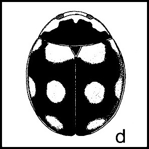
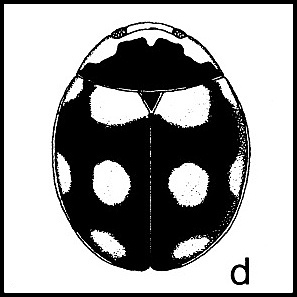

- Tenomerga cinerea")
Return to Oklahoma Entomology - Compiled by Mike Quinn

 =
=
 - Omoglymmius americanus")


 - Scaphinotus cavicollis") =
= - Scaphinotus cavicollis") =
= - Scaphinotus cavicollis")
 =
= =
=
 finitimus Haldeman - Carabus finitimus") =
= finitimus Haldeman - Carabus finitimus")
 belfragei Salle - Dromochorus belfragei")


 =
= splendida Hentz - Cicindela splendida")


 - Ellipsoptera cuprascens")
 - Ellipsoptera macra")


 - Habroscelimorpha circumpicta")
 - Habroscelimorpha circumpicta")

 - Ellipsoptera nevadica")
 - Paraclivina bipustulata")
 - Schizogenius lineolatus")
 - Aspidoglossa subangulata")


 - Tachys")

 proximus (Say) - Tachys proximus")
 - Tachys scitulus")

 sp. - Bembidion")


 - Chlaenius tomentosus")


 =
=
 =
=

 =
=

 =
=
 - Chlaenius sericeus") =
= - Chlaenius sericeus")
 =
=
 =
=
 =
=

 - Dercylinus impressus")
 - Stenocrepis duodecimstriata - female")


 subacutus (Casey) - Pterostichus subacutus")


 - Colliuris pensylvanica")

 - Tetragonoderus fasciatus")
 - Tetragonoderus intersectus")
 - Anisodactylus caenus")

 - Notiobia terminata")


 - Stenomorphus californicus")


 - Stenolophus ochropezus")
 - Stenolophus binotatus")
 - Stenolophus comma")


 - Calleida decora")
 - Philophuga viridicollis - female")


 - Calleida viridipennis")
 - Axinopalpus biplagiatus")


 =
=


 - Lebia vittata")

 grandis Hentz - Lebia grandis")


 - Dicaelus crenatus") =
= - Dicaelus crenatus")


 reflexus LeConte - Badister reflexus")
 - Agonum punctiforme")
 tenuicollis (LeConte) - Platynus tenuicollis")


 =
=
 =
=
 =
=
 =
=
 - Helluomorphoides ferrugineus") =
= - Helluomorphoides ferrugineus")
 - Helluomorphoides nigripennis")

 - Thalpius dorsalis")
 horni (Chaudoir) - Thalpius horni")

 - Pseudaptinus tenuicollis")


 - Brachinus americanus")


 - Copelatus glyphicus")


 - Laccophilus maculosus")

 - Laccophilus quadrilineatus")

 - Desmopachria convexa")
 - Uvarus lacustris")
 - Neoporus shermani")
 - Neoporus undulatus")
 - Heterosternuta diversicornis")

 - Thermonectus basillaris")

 - Cybister fimbriolatus - female")

 - Dineutus assimilis - female")


 - Berosus exiguus")

 - Tropisternus collaris")


 - Cercyon praetextatus")

 - Plegaderus transversus")
 =
=


 - Platylomalus aequalis")


 =
=


 - Atholus nubilus")


 thoracicum Horn - Colon thoracicum - male")


 - Necrophila americana")
 - Oiceoptoma inaequale")

 =
=

 - Nicrophorus carolinus")


 - Megalopinus caelatus")
 - Megalopinus rufipes")


 - Anotylus insignitus - female")


 - Achenomorphus corticinus")


 - Atinus monilicornis")

 - Eutrichites zonatus")

 - Euconnus")


 - Phacophallus tricolor")


 =
=


 =
= =
=
 =
= =
=
 - Odontotaenius disjunctus") =
= - Odontotaenius disjunctus") =
= - Odontotaenius disjunctus") =
=
 - Omorgus howelli") =
= - Omorgus howelli")

 =
=
 =
= =
=
 - Eucanthus lazarus") =
= - Eucanthus lazarus")
 =
=
 - Parochodaeus biarmatus") =
= - Parochodaeus biarmatus")


 =
= =
=
 - Ataenius imbricatus")
 - Platytomus longulus")
 - Platytomus micros")

 - Ataenius gracilis")


 - Ataenius platensis")


 - Ataenius cognatus")
 - Aphodius oklahomensis")
 - Aphodius stuessyi")
 - Aphodius haldemani")

 lentus - Aphodius lentus")

 - Aphodius abusus")
 - Aphodius badipes - male")
 - Aphodius gardneri")
 - Aphodius haemorrhoidalis")
 lutulentus Haldeman - Aphodius lutulentus")


 - Aphodius femoralis - male")
 - Aphodius insolitus")
 - Aphodius rubeolus")

 - Aphodius stercorosus")


 - Copris fricator")


 - Pseudocanthon perplexus")


 - Deltochilum gibbosum")


 viridis (Palisot de Beauvois) - Canthon viridis")
 - Digitonthophagus gazella - female")


 - Onthophagus orpheus - female")

 - Onthophagus subaeneus")

 - Phanaeus triangularis - male") =
= - Phanaeus triangularis - male")
 vindex MacLeay - Phanaeus vindex - male") =
= vindex MacLeay - Phanaeus vindex - male")

 =
=


 - Phyllophaga crenulata")
 - Phyllophaga micans")
 - Phyllophaga prunina")
 - Phyllophaga crassissima")
 - Phyllophaga profunda")

 - Pelidnota punctata")
 - Parastasia brevipes")

 =
= - Callistethus marginatus")
 - Anomala innuba") =
= - Anomala innuba")
 - Strigoderma arbicola") =
= - Strigoderma arbicola")
 - Dynastes tityus - male") =
= - Dynastes tityus - male") =
= - Dynastes tityus - male")


 =
=


 - Dyscinetus morator")
 =
=
 =
=
 - Phileurus valgus")
 - Phileurus truncatus") =
= - Phileurus truncatus")
 - Euetheola humilis")


 - Tomarus gibbosus")
 - Aphonus texanus")


 - Valgus seticollis - female")

 - Euphoria discicollis")
 =
=
 - Euphoria sepulcralis") =
= - Euphoria sepulcralis")
 - Euphoria fulgida")


 - Scirtes orbiculatus") =
= - Scirtes orbiculatus")
 - Sacodes pulchella")
 - Sacodes thoracica")


 =
=


 - Acmaeodera tubulus")

 - Acmaeodera ornata")

 - Acmaeodera tubulus")


 - Lampetis drummondi")
 - Poecilonota thureura")
 - Poecilonota cyanipes")

 - Dicerca lurida")
 - Dicerca obscura")


 - Phaenops aeneola")

 - Melanophila atropurpurea")
 - Agrilaxia flavimana")
 - Melanophila notata")


 - Anthaxia quercata")
 =
=
 cyanella Gory - Anthaxia cyanella")
 viridicornis - Anthaxia viridicornis")

 =
=


 - Chrysobothris sexsignata - female")

 =
=


 - Agrilus ruficollis")

 - Agrilus bilineatus") =
= - Agrilus bilineatus")

 - Agrilus")


 - Agrilus granulatus")
 - Brachys aerosus")
 - Brachys ovatus")


 - Pachyschelus laevigatus")
 - Pachyschelus purpureus - female")
 - Curimopsis strigosa")
 - Porcinolus undatus") =
= - Porcinolus undatus")
 - Heterelmis vulnerata")

 - Hexacylloepus ferrugineus")
 - Microcylloepus pusillus")


 - Helichus lithophilus")


 - Tropicus pusillus")

 - Heterocerus texanus")


 - Ectopria nervosa") =
= - Ectopria nervosa")
 =
=


 - Zenoa picea") =
= - Zenoa picea")
 - Eurypogon harrisii")
 - Cerophytum pulsator - male")


 - Isorhipis ruficornis - female")


 - Rhagomicrus humeralis")
 - Entomophthalmus rufiolus")


 - Selonodon speratus")
 - Conoderus lividus")


 - Rismethus scobinula")


 - Aeolus scutellatus")
 =
=

 - Ampedus areolatus")
 - Anchastus binus")
 - Ampedus areolatus")
 - Ampedus fuscatus - male")


 - Megapenthes insignis")


 - Limonius auripilis")
 - Limonius basilaris")
 - Hadromorphus")
 - Limonius griseus")
 - Limonius basilaris")
 - Limonius griseus")
 - Paradonus pectoralis")
 - Melanactes piceus")
 - Melanactes piceus")
 - Perissarthron trapezium")
 - Melanactes piceus")
 =
=


 - Greenarus thoracicus")
 - Dictyoptera aurora")

 =
=
 - Plateros lictor - male") =
= - Plateros lictor - male")
 =
=
 - Calopteron terminale")
 - Calopteron reticulatum")


 - Pyropyga minuta")


 - Lucidota atra")
 - Ellychnia corrusca")


 =
=
 - Ditemnus latilobus - male")
 - Ditemnus bidentatus")


 - Rhagonycha lineola")
 - Rhagonycha scitulus")

 - Endecatomus rugosus")
 - Novelsis aequalis")
 - Trogoderma ornatum")

 - Anthrenus verbasci")


 - Cryptorhopalum haemorrhoidale")


 =
=
 - Stephanopachys hispidulus") =
= - Stephanopachys hispidulus")

 - Xylobiops basilaris") =
= - Xylobiops basilaris")
 - Xylobiops texanus")
 - Lichenophanes bicornis")
 - Amphicerus bicaudatus")


 =
=


 - Euvrilletta mucorea")
 =
=
 =
=


 =
=
 - Calymmaderus nitidus")
 - Calymmaderus obsoletus") =
= - Calymmaderus obsoletus")

 =
=
 =
=

 - Tricorynus similis")
 - Tricorynus similis")

 - Corticotomus parallelus")
 - Corticotomus cylindricus")
 - Airora cylindrica")
 - Temnoscheila acuta") =
= - Temnoscheila acuta")

 - Tenebroides corticalis")


 - Tenebroides obtusus")
 - Lycoptis americana")

 - Necrobia rufipes")
 - Isohydnocera curtipennis")
 - Wolcottia pedalis")
 - Pelonides quadripunctata - male")
 - Neorthopleura thoracica")
 - Chariessa pilosa - male")

 - Cymatoderella collaris")
 - Madoniella dislocatus")
 - Pyticeroides laticornis") =
= - Pyticeroides laticornis")


 - Cymatodera inornata")
 - Enoclerus nigripes")
 - Enoclerus nigrifrons")
 - Enoclerus rosmarus")
 - Thanasimus dubius")
 - Phyllobaenus knausii")
 =
= - Phyllobaenus pallipennis")
 - Phyllobaenus humeralis")
 - Phyllobaenus pubescens")
 - Phyllobaenus verticalis") =
= - Phyllobaenus verticalis")
 - Phyllobaenus unifasciatus")
 - Melyrodes basalis")
 - Dasytellus nigricornis")

 - Collops quadrimaculatus")

 =
= - Hypebaeus bicolor - male")


 - Attalus circumscriptus")


 - Amphicrossus ciliatus")


 - Colopterus maculatus")
 - Colopterus unicolor")


 - Epuraea rufa")
 - Stelidota octomaculata")
 - Lobiopa undulata")


 - Pallodes pallidus")


 - Monotoma longicollis")


 - Cathartosilvanus imbellis")
 - Ahasverus rectus")
 - Ahasverus advena")


 - Catogenus rufus")

 =
=
 - Placonotus zimmermanni")
 - Placonotus modestus")
 - Laemophloeus biguttatus") =
= - Laemophloeus biguttatus")


 - Charaphloeus convexulus")


 - Leptophloeus angustulus - male")


 - Stilbus apicalis")
 - Gorginus rubens")


 - Languria bicolor")

 - Acropteroxys gracilis")

 - Pseudischyrus extricatus")
 - Ischyrus quadripunctatus")


 - Tritoma biguttata")


 - Cryptophilus integer")
 - Toramus pulchellus")


 - Diplocoelus rudis")

 - Prolyctus exaratus")

 - Bothrideres geminatus")


 - Rhanidea unicolor")
 - Aphorista vittata")


 =
=
 - Danae testacea") =
= - Danae testacea")


 - Delphastus pusillus")

 - Nephus flavifrons")
 - Didion punctatum")

 - Nephaspis oculatus")
 - Diomus liebecki")
 - Diomus amabilis") =
= - Diomus amabilis") =
= - Diomus amabilis")
 - Diomus xanthaspis")
 - Diomus terminatus")

 loewii Mulsant - Scymnus loewii")
 semiruber Horn - Scymnus semiruber")
 brullei Mulsant - Scymnus brullei")

 rubricaudus Casey - Scymnus rubricaudus")

 tenebrosus Mulsant - Scymnus tenebrosus")
 uncus Wingo - Scymnus uncus")
 =
= =
= =
=
 - Brachiacantha decempustulata") =
= - Brachiacantha decempustulata") =
= - Brachiacantha decempustulata") =
= - Brachiacantha decempustulata")
 =
= =
= =
=
 - Hyperaspis binotata") =
= - Hyperaspis binotata") =
= - Hyperaspis binotata")
 =
= =
=
 =
= =
=
 - Hyperaspis undulata") =
= - Hyperaspis undulata")
 =
=
 =
=
 - Hyperaspidius marginatus") =
= - Hyperaspidius marginatus")


 =
=
 - Brachiacantha dentipes") =
= - Brachiacantha dentipes") =
= - Brachiacantha dentipes")
 - Brachiacantha felina") =
= - Brachiacantha felina") =
= - Brachiacantha felina") =
=  =
= =
= =
= =
=
 =
=
 - Axion tripustulatum") =
= - Axion tripustulatum")

 - Psyllobora vigintimaculata")
 - Cycloneda munda")


 - Hippodamia tredecimpunctata")
 - Myzia pullata")
 - Neoharmonia venusta")
 - Olla v-nigrum") =
= - Olla v-nigrum")

 - Harmonia axyridis") =
= - Harmonia axyridis") =
= - Harmonia axyridis") =
= - Harmonia axyridis")


 - Typhaea stercorea")
 - Litargus sexpunctatus")


 =
=


 - Holostrophus bifasciatus")
 - Osphya varians")

 - Symphora flavicollis")


 - Mordellochroa scapularis") =
= - Mordellochroa scapularis") =
= - Mordellochroa scapularis")
 - Mordellina pustulata")


 - Mordellistena trifasciata")
 =
=
 =
=


 - Bitoma quadriguttata")


 - Microsicus parvulus")
 - Eucicones marginalis")
 - Namunaria guttulata")
 - Endeitoma granulata")


 - Bolitotherus cornutus - male") =
= - Bolitotherus cornutus - male")
 - Ammodonus fossor")


 - Isomira sericea")
 - Isomira sericea") =
= - Isomira sericea")


 - Neomida bicornis - female")

 - Gondwanocrypticus obsoletus")

 - Platydema ruficorne")
 - Platydema flavipes")


 - Platydema excavatum - male")


 - Alobates pensylvanica")
 - Polypleurus perforatus")
 - Strongylium tenuicolle")

 - Asclera puncticollis")


 - Oxacis cana")
 - Oxycopis mimetica")
 - Oxycopis thoracica")


 - Zonitis cribricollis")
 piazata bicolor LeConte - Nemognatha piazata")

 ? - Epicauta")


 - Epicauta atrata") =
= - Epicauta atrata")
 - Epicauta")


 - Aglenus brunneus")


 - Macratria murina")
 - Sapintus fulvipes")
 - Malporus cinctus")
 - Stricticollis tobias")

 - Omonadus floralis")
 - Acanthinus scitulus")
 - Acanthinus myrmecops")


 - Ischyropalpus sturmi")
 - Ischyropalpus subtilissimus")
 - Vacusus confinis")
 - Vacusus vicinus") =
= - Vacusus vicinus")
 - Notoxus monodon")


 - Notoxus murinipennis")
 - Emelinus melsheimeri - male")
 - Ganascus ventricosus")

 - Zonantes nubifer")
 - Zonantes subfasciatus")


 - Elonus basalis")
 - Pseudariotus notatus")


 - Canifa plagiata")
 - Pentaria dispar")


 =
=


 - Sphenostethus taslei")
 - Orthosoma brunneum")


 - Stenocorus cinnamopterus")
 - Stenocorus cinnamopterus")
 - Charisalia americana")


 - Trigonarthris atrata")
 - Pseudostrangalia cruentata")


 - Typocerus lugubris")

 - Typocerus octonotatus")


 - Rhopalophora longipes")


 - Molorchus bimaculatus")
 - Obrium maculatum")


 - Tessaropa tenuipes")

 - Oeme rigida")
 - Smodicum cucujiforme")

 - Phymatodes varius")


 - Parelaphidion incertum")
 =
= =
=
 - Xylotrechus colonus")
 - Xylotrechus sagittatus")


 - Tilloclytus geminatus")


 - Aethecerinus wilsonii")
 - Elytroleptus floridanus")
 - Tragidion coquus - male")
 - Batyle ignicollis")
 - Batyle suturalis")
 - Purpuricenus humeralis")

 - Dorcaschema alternatum")
 - Ataxia crypta")

 - Psenocerus supernotatus")

 - Cyrtinus pygmaeus")
 - Plectrodera scalator")


 - Goes tigrinus")
 - Goes pulcher")
 - Goes pulverulentus")


 - Eupogonius tomentosus")


 - Astylopsis sexguttata")
 - Graphisurus triangulifer - male")
 - Lepturges angulatus - male")


 =
=

 =
=

 =
=


 - Mecas cana")
 =
=
 - Oberea tripunctata") =
= - Oberea tripunctata") =
= - Oberea tripunctata")
 =
=
 - Oberea ruficollis") =
= - Oberea ruficollis")
 - Hemierana marginata") =
= - Hemierana marginata") =
= - Hemierana marginata") =
= - Hemierana marginata")
 - Phaea canescens")
 - Phaea monostigma")


 - Tetraopes tetrophthalmus")


 - Orsodacne atra") =
= =
= =
=
 - Gibbobruchus mimus")
 - Mimosestes amicus")


 - Acanthoscelides compressicornis")
 - Acanthoscelides longistilus")
 beetle - Acanthoscelides alboscutellatus")
 - Megacerus cubiculus - male") =
= - Megacerus cubiculus - male")
 =
=

 - Sennius cruentatus")


 =
=
 - Oulema simulans")
 palustris (Blatchley) - Oulema palustris")

 - Oulema collaris")


 - Chalepus bicolor")
 - Odontota scapularis")
 - Microrhopala vittata")


 - Microrhopala excavata")
 - Anisostena nigrita")
 - Anisostena funesta")
 - Octotoma plicatula")
 - Stenispa metallica")
 - Baliosus nervosus")
 - Sumitrosis inaequalis")
 - Brachycoryna melsheimeri")
 - Sumitrosis rosea")
 - Sumitrosis inaequalis")
 - Sumitrosis ancoroides")


 - Agroiconota bivittata")
 - Jonthonota nigripes")
 - Charidotella sexpunctata") =
= - Charidotella sexpunctata")
 - Gratiana pallidula")
 - Plagiometriona clavata") =
= - Plagiometriona clavata") =
= - Plagiometriona clavata")
 - Deloyala guttata") =
= - Deloyala guttata")

 - Prasocuris vittata")
 - Chrysolina auripennis")
 =
=
 =
=

 - Calligrapha scalaris")
 - Chrysomela texana") =
= - Chrysomela texana")

 =
=
 =
= - Labidomera clivicollis") =
= - Labidomera clivicollis")
 =
= - Leptinotarsa decemlineata")

 - Leptinotarsa haldemani") =
= - Leptinotarsa haldemani")


 =
=


 - Zygogramma disrupta")
 - Phyllecthris dorsalis")
 - Cerotoma trifurcata") =
= - Cerotoma trifurcata")
 - Paranapiacaba tricincta") =
= - Paranapiacaba tricincta")
 - Paratriarius dorsatus")
 - Acalymma vittatum")


 =
=
 =
=
 - Diabrotica cristata") =
= - Diabrotica cristata")

 - Phyllobrotica limbata")
 =
=
 - Ophraella notulata")

 - Ophraella americana")
 - Derospidea brevicollis")


 =
=


 - Lysathia ludoviciana")
 - Asphaera lustrans") =
= =
= - Asphaera lustrans")
 - Omophoita cyanipennis")


 - Capraita obsidiana")
 - Capraita texana") =
= - Capraita texana") =
= - Capraita texana")
 - Capraita sexmaculata")


 - Crepidodera nana")


 - Kuschelina gibbitarsa")

 - Kuschelina petaurista")


 - Glyptina cyanipennis")

 - Cerataltica insolita")
 - Orthaltica copalina - male") =
= - Orthaltica copalina - female")
 =
=

 - Systena hudsonias")
 - Systena frontalis")


 - Graphops simplex") =
= - Graphops simplex") =
= - Graphops simplex")
 - Graphops curtipennis")
 - Tymnes metasternalis")
 - Metachroma luridum")

 - Paria sexnotata")


 - Myochrous denticollis")


 - Griburius scutellaris") =
= - Griburius scutellaris")
 - Griburius montezuma") =
= - Griburius montezuma") =
= - Griburius montezuma")


 - Pachybrachis")

 - Pachybrachis pectoralis")


 - Pachybrachis othonus")


 - Pachybrachis luridus - male")


 - Pachybrachis trinotatus - female")
 - Pachybrachis subfasciatus")

 - Pachybrachis hepaticus")
 - Pachybrachis m-nigrum")
 - Pachybrachis tridens")


 - Bassareus lituratus") =
= - Bassareus lituratus")

 - Bassareus mammifer")
 - Bassareus clathratus")


 =
=


 - Diachus auratus")
 - Diachus chlorizans")
 - Coleothorpa dominicana") =
= - Coleothorpa dominicana")
 - Anomoea laticlavia")
 - Coleorozena fulvilabris") =
= - Coleorozena fulvilabris")
 =
=

 =
=
 =
=
 - Pseudochoragus nitens") =
= - Pseudochoragus nitens")


 - Toxonotus cornutus")
 - Goniocloeus bimaculatus")
 - Euparius lugubris")

 - Ormiscus fasciatus")

 - Trigonorhinus limbatus")
 - Trigonorhinus rotundatus")

 - Pterocolus ovatus")
 - Synolabus bipustulatus")

 - Temnocerus aeratus") =
= - Temnocerus aeratus")
 - Eugnamptus angustatus") =
= =
=
 - Haplorhynchites aeneus")
 =
=

 =
=


 =
=


 =
=


 - Dorytomus mucidus")


 - Anthonomopsis mixta")


 =
=


 - Lignyodes bischoffi")
 varius LeConte - Lignyodes varius")
 pallidus (LeConte) - Lignyodes pallidus")


 helvolus (LeConte) - Lignyodes helvolus")


 - Smicronyx")


 - Bagous tuberosus") =
= - Bagous tuberosus")

 - Apinocis deplanatus")

 - Buchananius sulcatus")


 - Baris umbilicata")

 - Odontocorynus salebrosus")


 - Ceutorhynchus erysimi")
 - Ceutorhynchus rapae")


 =
= - Cylindrocopturus adspersus") =
= - Cylindrocopturus adspersus")


 =
=


 =
=
 - Tyloderma foveolatum") =
= - Tyloderma foveolatum")
 =
=
 =
=
 - Cophes obtentus") =
= - Cophes obtentus")
 =
=
 - Cophes fallax")
 =
=
 =
=


 - Naupactus tesselatus")
 - Naupactus peregrinus")
 - Sitona californius")

 - Pandeleteius cinereus")
 - Pandeleteius hilaris")

 =
=
 =
=

 - Magdalis pandura")
 =
= - Magdalis armicollis")
 - Magdalis barbita")


 - Conotrachelus nenuphar")
 =
=

 - Conotrachelus recessus")
 - Conotrachelus anaglypticus") =
= - Conotrachelus anaglypticus")


 - Pheloconus cribricollis")


 - Conotrachelus leucophaeatus")


 - Rhyssomatus palmacollis")


 - Euplatypus compositus - male") =
= - Euplatypus compositus - female")
 - Myoplatypus flavicornis")

 - Monarthrum mali")
 - Monarthrum fasciatum")


 - Hypothenemus rotundicollis")

 - Ips avulsus")


 - Ips grandicollis")
 - Orthotomicus caelatus")


 - Scolytus rugulosus")


 - Xyleborinus saxeseni")


 - Cyclorhipidion bodoanum")

 - Xyleborus ferrugineus")

 - Xyleborus xylographus")
 - Xylosandrus crassiusculus")


 - Dendroctonus terebrans")


 - Phloeotribus frontalis")

July 25, 2016 © Mike Quinn / entomike@gmail.com / Oklahoma Entomology / Texas Entomology / Texas Beetle Resources /

 - Pseudolampsis guttata")
 - Parchicola tibialis")
 - Strabala rufa")
 - Pseudodibolia opima")
 - Pseudodibolia opima")
 - Lupraea picta")
 - Phyllotreta aeneicollis")

 - Syphrea nana")
 - Blepharida rhois")
 - Trichaltica scabricula")


 - Luperaltica nigripalpis")

 - Disonycha pensylvanica")
 - Disonycha fumata")
 - Disonycha glabrata")


 - Disonycha triangularis")

 - Disonycha discoidea")


 - Cyrtepistomus castaneus")